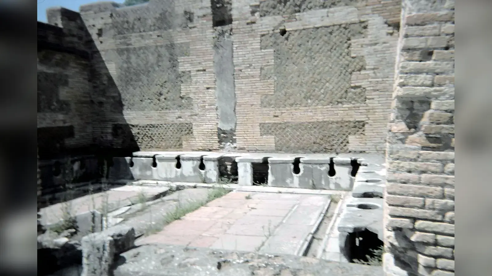
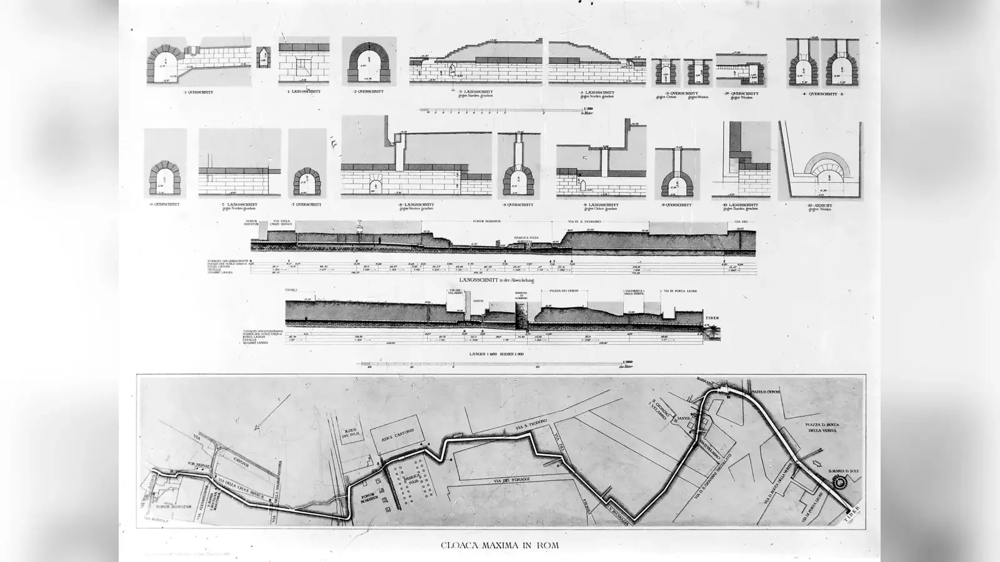
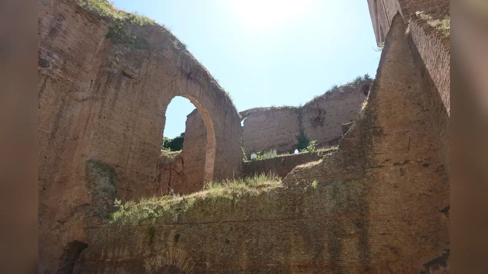
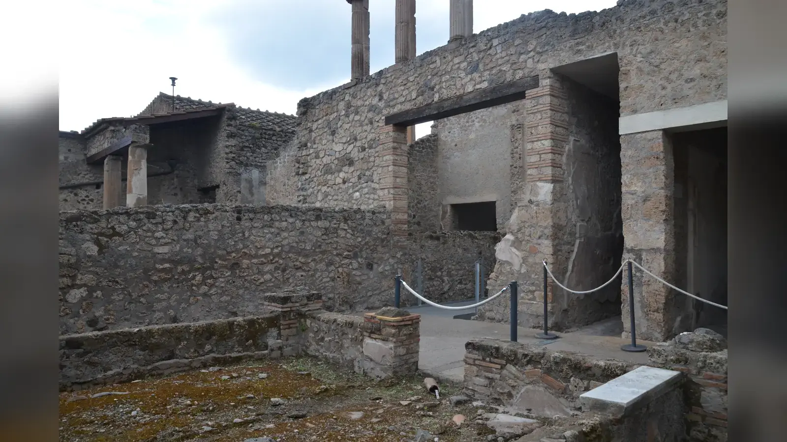

MS 1. ya da 2. yüzyılda Roma dünyasındaki büyük bir kentin umumi tuvaletlerinden birine girmek, modern mahremiyet anlayışını zorlayan bir deneyim olurdu. Duvar boyunca uzanan taş ya da mermer oturma sıralarında yan yana delikler bulunuyor, çoğu iyi bilinen örnekte kullanıcıları birbirinden ayıran yüksek kabinler yer almıyordu. Oturakların altında atığı taşıyabilen bir kanal, ayakların önünde ise suyun aktığı daha sığ bir oluk bulunabiliyordu. Bugünün insanına son derece yabancı ve sağlık açısından kuşkulu görünen bu mekân, kendi döneminde gelişmiş bir şehir altyapısının parçasıydı.
Antik Roma’da tuvalet ve temizlik hakkındaki temel çelişki burada ortaya çıkar. Romalılar su kemerleri, çeşmeler, hamamlar, drenaj kanalları ve umumi tuvaletler kurarak suyu ve atığı kent ölçeğinde yönetme konusunda olağanüstü sistemler geliştirdiler. Fakat bakterileri, virüsleri, parazitlerin yaşam döngülerini ve fekal-oral bulaşmanın modern açıklamasını bilmiyorlardı. Bu nedenle bir uygulama görünür kiri azaltırken aynı anda başka bir bulaşma yolu yaratabiliyordu. Roma’nın asıl başarısı modern anlamda mikropsuz bir toplum yaratmak değil, temizlik ve atık yönetimini yalnız bireysel bir mesele olmaktan çıkarıp kamusal şehir yaşamının parçası hâline getirmekti.
Antik Romalılar Gerçekten Temiz miydi?
“Temiz” ve “hijyenik” sözcüklerini antik dünyaya doğrudan modern anlamlarıyla uygulamak yanıltıcıdır. Modern hijyen, mikroorganizmalar ve bulaşma yolları hakkındaki bilimsel bilgiye, güvenli içme suyu standartlarına, kanalizasyon arıtmasına ve dezenfeksiyona dayanır. Romalıların böyle bir bilgi sistemi yoktu. Buna karşılık bedenin görünür kirden arındırılması, kötü kokunun giderilmesi, saç ve cilt bakımı, giysilerin temizliği ve yaşanılan çevredeki atığın uzaklaştırılması konusunda güçlü alışkanlıkları vardı.
Temizlik aynı zamanda statü ve görünüşle ilişkiliydi. Parfümlü yağlar, bakımlı saç, tıraş, cımbızla kıl alma ve temiz giysi seçkin çevrelerde sosyal görünümün parçası olabiliyordu. Tıp yazarları banyo, egzersiz, beslenme ve beden dengesini sağlıkla ilişkilendiriyordu. Dini arınma ise başka bir kategoriydi; ritüel saflık mikropsuzluk demek değildi. Dolayısıyla Roma’nın temizlik kültürünü anlamak için sağlık, koku, estetik, statü ve ritüel arasında ayrım yapmak gerekir.
Roma’yı “dünyanın ilk temiz toplumu” ilan etmek de doğru değildir. Hamam ve su yönetimi Roma’dan önce vardı. Romalıların ayırt edici başarısı mevcut teknikleri büyük ölçekte yaygınlaştırmaları, yoğun kent nüfusunun hizmetine sokmaları ve hamamı gündelik toplumsal hayatın güçlü kurumlarından birine dönüştürmeleriydi.
Roma’da Su Şehre Nasıl Ulaşıyordu?
Roma su kemerleri esas olarak yerçekimiyle çalışıyordu. Uzak kaynaklardan alınan su, çok küçük ama sürekli bir eğim korunarak şehre getiriliyor; arazi gerektirdiğinde tüneller, kemerli geçişler ve başka mühendislik çözümleri kullanılıyordu. Bugün su kemeri denince gözümüzde yükselen anıtsal kemerler sistemin yalnız en görünür kısmıdır; hatların önemli bölümü yer altında ya da zemine yakın ilerliyordu.
MS 1. yüzyılın sonunda Roma’nın su idaresinden sorumlu Frontinus, De aquaeductu urbis Romae adlı eserinde su kemerlerini, dağıtım sistemini, kaçak bağlantıları ve bakım sorunlarını ayrıntılı biçimde anlattı. Onun rakamları son derece değerlidir, fakat antik ölçü birimleri ve teorik kapasite ile fiilî akış arasındaki farklar nedeniyle modern litre hesaplarına dönüştürülürken tartışmalar vardır.
Şehre gelen su çeşmelere, rezervuarlara, hamamlara, imparatorluk yapılarına ve izin verilmiş bazı özel bağlantılara dağıtılabiliyordu. Her Romalının evinde musluk yoktu. Özel bağlantı önemli bir ayrıcalıktı; geniş nüfus kesimleri suyu kamusal çeşmeden alıp eve taşımak zorundaydı. Aynı sistem böylece bir seçkine ev içi su konforu sağlarken bir insula sakini için günlük su taşıma emeği anlamına gelebiliyordu.
Su kemerleri yalnız içme suyuyla ilgili değildi. Hamamları, çeşmeleri ve bazı latrinaları besliyor, kullanılan suyun drenaja katılmasıyla kentsel akışı da etkiliyordu. Augustus döneminde su idaresinin ve kamusal yapıların geliştirilmesi, Augustus’un Roma’yı dönüştürme siyasetinin anıtlardan ibaret olmadığını gösteren örneklerden biridir.
Roma’daki Evlerde Tuvalet Var mıydı?
Roma’da özel tuvaletler vardı, fakat “kanalizasyon vardı, demek ki her evde kanalizasyona bağlı tuvalet vardı” sonucu yanlıştır. Pompeii, Herculaneum, Ostia ve Roma’daki arkeolojik bulgular özel latrinaların, çukurların ve farklı atık düzeneklerinin yan yana var olduğunu gösterir. Zengin bir domus ile kalabalık bir insula aynı olanaklara sahip değildi.
Bazı evlerde tuvaletler mutfak ya da hizmet alanlarına yakın kurulmuş, böylece farklı evsel atıkların aynı çukura yönelmesi sağlanmıştı. Bazıları kanal hattına bağlanabiliyor, bazıları fosseptik benzeri çukurlara boşalıyor, taşınabilir lazımlıklar da kullanılıyordu. Üst katlarda yaşayan yoksul insanların su ve atık sorununu çözme imkânı alt kattaki varlıklı hanelerden farklıydı.
Pencereden atık dökülmesiyle ilgili popüler hikâye de ölçülü ele alınmalıdır. Roma hukukunda yukarıdan dökülen ya da düşen şeylerin insanlara zarar vermesine ilişkin hükümler bulunması böyle olayların gerçek bir kent riski olduğunu gösterir. Ancak hukuki düzenleme, bunun her sokakta sürekli yapılan standart davranış olduğunu kanıtlamaz. Kaynak bize riskin varlığını söyler; sıklığını değil.
Kanal bağlantısı da her zaman ideal değildi. Kötü koku, geri tepme, tıkanma ve haşereler kanalın eve bağlanmasını sorunlu hâle getirebilirdi. Modern gözle “ilkel” görünen bir çukur, belirli koşullarda ev sahibi açısından daha yönetilebilir bir çözüm olabilirdi.
Roma Umumi Tuvaletleri Nasıl Çalışıyordu?
Foricae olarak bilinen çok kişilik umumi latrinaların iyi korunmuş örneklerinde taş ya da mermer oturma sıraları görülür. Düzenli aralıklarla açılmış deliklerin altından atık kanalı geçebilir, su akışı içeriğin uzaklaştırılmasına yardım edebilirdi. Oturakların önündeki daha sığ oluk ise su ve temizlik işlemleriyle ilişkilendirilir. Fakat bütün Roma tuvaletlerinin tek bir plana sahip olduğu düşünülmemelidir.
Çoğu tanınmış örnekte oturma yerleri arasında modern kabinler yoktur. Bu durum Romalıların hiçbir mahremiyet duygusuna sahip olmadığı anlamına gelmez. Mahremiyetin sosyal sınırları farklıydı ve mekâna, sınıfa, cinsiyete göre değişebiliyordu. Arkeolojik yapı bize insanların yan yana oturabildiğini gösterir; onların bunu nasıl hissettiğini doğrudan anlatmaz.
Bu mimari sosyal etkileşime izin veriyordu. Ancak umumi tuvaletleri “Romalıların siyaset konuştuğu sosyal kulüpler” olarak romantikleştirmek kanıtın ötesine geçer. İnsanların konuşmuş olması son derece mümkündür; her latrinanın özellikle sohbet amacıyla kullanılan bir salon olduğunu gösteren kayıt yoktur.
Asıl yenilik atığın belirli noktalarda toplanıp su ve drenaj sistemiyle ilişkilendirilmesiydi. Bu modern sağlık standardı değildi, fakat yoğun nüfuslu bir kentte bireysel atık sorununu kamusal altyapının parçasına dönüştürüyordu.
Romalılar Tuvaletten Sonra Nasıl Temizleniyordu?
Roma tuvaletleriyle ilgili internetteki en meşhur nesne ucunda sünger bulunan çubuktur. Tersorium ya da xylospongium adıyla anılan araç çoğu zaman tartışmasız bir gerçekmiş gibi anlatılır: herkes aynı süngeri kullanıyor, ardından sirke ya da tuzlu su dolu kaba bırakıyordu. Antik kanıt bu kadar ayrıntılı ve kesin değildir.
Seneca, bir gladyatörün tuvalet temizliğinde kullanılan süngerli çubuğu kullanarak intihar ettiği olayı aktarır. Martial de tuvalet bağlamında süngerli çubuğa gönderme yapar. Bu metinler böyle bir aracın varlığını destekler; ancak bütün imparatorluk için hazırlanmış kullanım kılavuzu değildir.
Geleneksel yorum süngerin dışkılama sonrası kişisel temizlik için kullanıldığı yönündedir. Bununla birlikte bazı araştırmacılar süngerin tuvalet oturaklarının temizlenmesi gibi işlevlerinin de olabileceğini tartışmıştır. Organik süngerlerin arkeolojik olarak korunmaması sorunu daha da zorlaştırır. Bu yüzden “her kullanıcı aynı süngeri bedeninde kullanıyordu” cümlesi kanıtın izin verdiğinden daha kesindir.
Sirke veya tuzlu suya batırma ayrıntısını da bütün latrinalar için standartlaştırmamak gerekir. Romalıların su, sünger ve çeşitli temizleyici sıvılar kullandığını biliyoruz; fakat modern dezenfeksiyon protokolünü onların davranışına geriye doğru yerleştiremeyiz. Tersorium örneği, sınırlı antik ipuçlarının modern popüler kültürde nasıl kesin bir “Roma gerçeğine” dönüşebildiğinin iyi bir örneğidir.
Cloaca Maxima Gerçekte Ne İşe Yarıyordu?

Cloaca Maxima’nın en eski işlevi Roma Forumu çevresindeki alçak, ıslak arazinin ve yağmur suyunun drenajıyla bağlantılıydı. Açık kanallar zamanla kapatıldı ve büyüyen kentin atık su sisteminin parçalarından biri hâline geldi. Bu nedenle yapıyı yalnız “dev kanalizasyon” olarak tanımlamak tarihini eksik anlatır.
Cloaca Maxima bütün Roma evlerinin bağlandığı tek ana kanal değildi. Kentte farklı drenaj hatları bulunuyor, birçok ev kanal bağlantısından yoksun kalıyordu. Sistem yağmur suyunu, sokak akışını, bazı hamam sularını ve belirli yapıların atıklarını Tiber’e taşıyabiliyordu.
Buradaki kritik fark arıtma ile uzaklaştırma arasındadır. Modern kanalizasyon tesisi atık suyu işleyerek zararlı içeriği azaltmaya çalışır. Roma kanalları atığı esas olarak başka bir yere taşıyordu. Bir sokaktan kirli suyun uzaklaştırılması yerel yaşam koşullarını iyileştirebilir, fakat kirleticiyi çevresel döngüden yok etmez.
Kanalizasyonun kendi sorunları da vardı: kötü koku, tıkanma, geri akış, haşere ve gazlar. Cloaca Maxima’nın büyüklüğü ve uzun ömrü etkileyicidir; fakat onu modern sanitasyon sistemi gibi düşünmek, Roma mühendisliğine gerçekte sahip olmadığı bir halk sağlığı işlevi yükler.
Roma Hamamlarında Temizlik Nasıl Yapılıyordu?

Roma hamamı yalnız yıkanma odası değildi. Küçük balnea ile büyük thermaeler ölçek ve hizmet bakımından farklıydı. Büyük komplekslerde ziyaretçi soyunma alanı apodyteriumdan ılık tepidariuma, sıcak caldariuma ve soğuk frigidariuma geçebilir; palaestrada egzersiz yapabilirdi. Her hamamın dolaşım düzeni aynı değildi, fakat sıcaklık değişimleri ve beden bakımı deneyimin temel parçalarıydı.
Egzersiz öncesi ya da sonrasında bedene yağ sürülebilir, ter ve kirle karışan yağ kavisli metal strigilis ile kazınabilirdi. Hipokaust sistemi taban altından sıcak hava geçirerek odaları ısıtıyor, büyük tesislerde su ve yakıt tüketimi ciddi bir lojistik gerektiriyordu.
Hamamlar sosyal hayata da aitti. İnsanlar burada dinleniyor, görüşüyor, iş konuşuyor ve büyük komplekslerde başka kamusal imkânlardan yararlanıyordu. Bu geniş kullanım, hamamı Roma kent kültürünün en karakteristik kurumlarından biri yaptı.
Kadınların hamam kullanımı iyi belgelenmiştir, fakat tek bir kural yoktu. Bazı tesislerde ayrı bölümler, bazılarında farklı saatler bulunuyor; edebî kaynaklarda karma kullanım da tartışılıyordu. Bir dönemdeki uygulamayı bütün imparatorluğa genellemek doğru değildir.
Romalılar Sabun Kullanıyor muydu?
Romalıların sabunu hiç bilmediği iddiası yanlıştır. Plinius sapo adı verilen sabun benzeri maddelerden söz eder. Buna karşılık modern kalıp sabunun herkesin günlük banyosunun merkezinde olduğu izlenimi de yanlıştır. Roma banyo kültürünün en karakteristik yöntemlerinden biri yağ ve strigilis kullanımına dayanıyordu.
Zeytinyağı ya da kokulu yağ bedene sürülüyor, egzersiz ve terle karışan tabaka metal strigilis ile sıyrılıyordu. Ardından suyla yıkanma ve havuz kullanımı gelebilirdi. Bu yöntem modern sabunla köpürmekten farklı olsa da görünür kir ve teri uzaklaştırmaya hizmet ediyordu.
Parfümler, merhemler, taraklar, usturalar ve cımbızlar da bakım kültürünün parçasıydı. Beden kıllarının alınması bazı dönemlerde moda ve statüyle bağlantılıydı. Seneca’nın hamam gürültüsünden yakınırken kıl yolan görevliden söz etmesi, bakım hizmetlerinin hamam çevresine ne kadar yerleştiğini gösterir.
Roma’da temiz görünmek yalnız hastalık önleme meselesi değildi. Koku, saç, sakal, cilt ve giysi sosyal değerlendirmeye açıktı. Bu nedenle kişisel bakımın sağlık, estetik ve statü boyutlarını birbirinden ayırmak gerekir.
Hamamlar Gerçekten Hijyenik miydi?
Hamamlar görünür kiri bedenden uzaklaştırıyor ve evinde özel banyo bulunmayan insanlara suya erişim sağlıyordu. Bu gerçek bir temizlik avantajıydı. Ancak temiz görünmek ile mikrobiyolojik olarak güvenli olmak aynı şey değildir.
Çok sayıda insan ortak havuzlara giriyor, sıcak ve nemli yüzeyleri kullanıyor ve egzersiz sonrası ter ile yağ kalıntılarını aynı ortama taşıyordu. Büyük su arzı, her havuzun her kullanıcıdan sonra tamamen taze suyla doldurulduğu anlamına gelmez. Tesislerin işletme biçimi ve su yenileme hızı da aynı değildi.
Antik hekimler banyonun sağlık etkilerini kendi tıbbi teorileri içinde tartışıyordu. Galenos gibi yazarlar sıcaklık, egzersiz, beslenme ve banyo arasındaki ilişkiyi önemser. Bu, Romalıların hamam ile sağlık arasında bağ kurmadığını söylemenin yanlış olduğunu gösterir. Fakat bu teoriler bakteri ve virüs bilgisine dayanmıyordu.
Dolayısıyla “Roma hamamları hastalık yuvasıydı” demek de “hamamlar halk sağlığını çözdü” demek kadar aşırıdır. Hamamlar kişisel temizliği artırmış, fakat ortak su ve yüzeyler modern hijyen açısından potansiyel bulaşma ortamları yaratmış olabilir.
Roma Tuvaletleri ve Hamamları Hastalıkları Azalttı mı?
Temiz kaynaktan suyu yoğun nüfuslu kente taşımak önemli sağlık avantajları yaratabilir. İnsanları kirlenmiş yüzey sularına daha az bağımlı kılmak ve atığı yaşam alanından uzaklaştırmak bazı temas biçimlerini azaltır. Bu açıdan Roma altyapısının gerçek faydaları vardı.
Buna rağmen arkeoparazitolojik araştırmalar Roma dünyasında kamçılı kurt Trichuris trichiura ve yuvarlak kurt Ascaris lumbricoides gibi bağırsak parazitlerinin yaygın kaldığını gösteriyor. Taraklarda bulunan bit ve pireler de dış parazitlerin gündelik hayatın parçası olduğunu ortaya koyar. Gelişmiş tuvalet ve hamamların varlığı parazit sorununu ortadan kaldırmamıştı.
Bu bulgudan “hamamlar parazitleri artırdı” şeklinde kesin bir sonuç çıkarılamaz. Roma dünyası çok geniştir ve arkeolojik örneklem sınırlıdır. İnsan dışkısının gübre olarak kullanılması parazit yumurtalarını gıda döngüsüne geri sokmuş olabilir. Ortak hamamlar bazı dış parazitler veya cilt enfeksiyonları için bulaşma fırsatı yaratmış olabilir. Gıda üretimi ve su kirliliği başka yollar sunuyordu.
Asıl sonuç altyapının halk sağlığıyla ilişkisinin otomatik olmadığıdır. Kanal yapmak dışkıyı yok etmez; su kemeri yapmak suyun bütün yol boyunca kirlenmeyeceğini garanti etmez. Roma mühendisliği bazı riskleri azaltırken mikrop bilgisi olmadığı için başka bulaş zincirlerini göremiyordu.
Romalılar Dişlerini Nasıl Temizliyordu?
Roma dünyasında diş tozları, aşındırıcı maddeler, bezler ve çeşitli ağız bakım karışımları biliniyordu. Tek bir standart Roma diş macunu yoktu. Ağız kokusunun giderilmesi ve diş görünümü sosyal bakımın parçasıydı.
İdrarla diş beyazlatma hikâyesi özellikle dikkat gerektirir. Martial’in İberya kökenli idrar ile beyaz dişler arasında alaycı ilişki kuran epigramları vardır. Beklemiş idrarda oluşan amonyağın temizleyici özelliği kimyasal olarak anlaşılabilir; fakat hiciv şiirini bütün Romalıların düzenli diş bakım kılavuzu gibi okumak yanlıştır.
Diş sağlığı beslenme ve üretim tekniklerinden de etkileniyordu. Modern rafine şekerin bulunmaması bazı topluluklarda çürük örüntüsünü değiştirebilirken tahıl öğütme sırasında una karışan taş parçacıkları aşınmayı artırabiliyordu. Yaş, beslenme ve toplumsal sınıf da sonuçları değiştiriyordu.
Bu nedenle “Romalılar dişlerini idrarla fırçalardı” genellemesi, hicivsel bir antik göndermeyi bütün topluma yayar. Arkeolojik dişler ve yazılı kaynaklar çok daha çeşitli bir tablo gösterir.
İdrar Neden Ekonomik Bir Malzemeydi?

Beklemiş idrarda oluşan amonyak, tekstil temizliği ve işlenmesinde yararlıydı. Fullonica adı verilen işletmelerde kumaşlar çeşitli çözeltiler içinde ayakla çiğneniyor, durulanıyor ve sonraki işlemlerden geçiriliyordu. Pompeii’deki fullonica kalıntıları bu iş kolunun fiziksel düzenini anlamamıza yardım eder.
Bu kullanım “Romalılar idrarla yıkanıyordu” anlamına gelmez. Endüstriyel tekstil temizliği ile kişisel banyo birbirinden farklıdır. İdrarın toplanabilir ekonomik hammadde olması, kent atığının bazı türlerinin yeniden değer kazanabildiğini gösterir.
Vespasianus’la ilişkilendirilen pecunia non olet, yani “para kokmaz” sözü bu bağlamda anlatılır. Suetonius, vergi gelirine itiraz eden Titus’a Vespasianus’un parayı koklatıp kokmadığını sorduğu anekdotu aktarır. Bu kelimesi kelimesine stenografik konuşma kaydı değil, imparatorun mali pragmatizmini anlatan edebî hikâyedir.
İdrar ekonomisi Roma sanitasyonunun önemli bir yönünü açığa çıkarır: atık her zaman yalnız uzaklaştırılması gereken madde değildi. Değeri varsa toplanıp üretim zincirine geri sokulabiliyordu.
Roma Sokakları Ne Kadar Temizdi?
Su kemerleri ve mermer hamamlar, Roma sokaklarının sürekli temiz olduğu anlamına gelmez. Hayvan dışkısı, pazar artıkları, atölyeler, yemek üretimi, çamur, yağmur suyu ve insan atıkları yoğun kentte sürekli sorun yaratıyordu. Temizlik düzeyi mahallenin konumuna ve drenajına göre değişiyordu.
Pompeii’nin yükseltilmiş geçiş taşları sık sık yalnız “dışkı nehirlerinden kaçmak” için yapılmış gibi sunulur. Sokakta kirli su ve atık bulunması mümkündür, fakat taşların işlevi daha geniştir. Yayaları yol yüzeyindeki su ve çamurdan uzak tutuyor, aralarındaki boşluklar tekerlekli araçların geçişine izin veriyordu.
Roma hukukundaki düzenlemeler kent yönetiminin atık ve düşen nesnelerle uğraştığını gösterir. Ancak modern belediye çöp toplama sistemine benzer tek ve homojen bir hizmet düşünmemeliyiz. Özel kişiler, işletmeler ve kamusal görevliler farklı sorumluluklar üstleniyordu.
Anıtsal merkezlerle yoksul mahalleler de aynı bakım düzeyine sahip değildi. Roma’nın altyapısını değerlendirirken Forum’un mermeri kadar insulae çevresindeki gündelik koşulları da hesaba katmak gerekir.
Kurşun Borular Romalıları Zehirledi mi?
Roma su dağıtımında kurşun boruların kullanıldığı kesindir ve kurşunun toksik olduğu modern bilim açısından tartışmasızdır. Ancak “Roma İmparatorluğu kurşun borular yüzünden yıkıldı” tezi kanıtlarla desteklenen yeterli bir açıklama değildir.
Vitruvius kil boruları kurşundan daha sağlıklı bulur ve kurşun işçilerindeki fiziksel belirtilere dikkat çeker. Bu, modern toksikoloji bilgisine sahip oldukları anlamına gelmez; bazı kurşun biçimlerinin zararı konusunda deneyimsel farkındalık olduğunu gösterir.
Jeokimyasal araştırmalar Roma su sisteminin insan kaynaklı kurşun kirliliği ürettiğini göstermiştir. Bunun her bireyde aynı doz ve aynı sağlık sonucu yarattığını söylemek mümkün değildir. Su kaynakları, boru uzunluğu, akış, mineral tabakaları ve kullanım alışkanlıkları maruziyeti değiştiriyordu.
Kurşun yalnız borulardan gelmiyordu; kaplar, pigmentler ve bazı üretim süreçleri de kaynak olabilirdi. Kurşun maruziyeti gerçek bir sağlık sorunudur, fakat Roma İmparatorluğu’nun yıkılışını tek bir toksine indirgemek siyasi, askerî ve ekonomik dönüşümleri yok sayar.
Zenginlerle Yoksullar Aynı Ölçüde Temiz miydi?
Kamusal çeşme ve hamamlar özel serveti olmayan insanlara önemli imkân sağladı. Özel banyosu bulunmayan bir insula sakini hamama gidebilir, evinde su hattı olmayan biri çeşmeden su alabilirdi. Bu, kamusal altyapının sınıfsal farkları belirli ölçüde azaltan yönüdür.
Fakat farkları ortadan kaldırmadı. Seçkin bir domus sakini özel su bağlantısına, banyoya, tuvalete, hizmetkârlara ve pahalı bakım ürünlerine sahip olabilirdi. Yoksul bir kentli suyu taşımak ve kalabalık tesisleri kullanmak zorundaydı. Aynı su kemeri iki kişiye aynı hayatı vermiyordu.
Kadınların, kölelerin, çocukların ve askerlerin deneyimleri de aynı değildi. Kadınlar hamam kullanıyordu, fakat saatler, bölümler ve ücretler değişebiliyordu. Köleler temizlik emeğinin büyük kısmını gerçekleştirirken kendi erişimleri efendilerinin düzenine bağlı olabilirdi.
Kırsal nüfus ile Roma başkentinin sakinlerini tek “Romalılar” kategorisinde eritmek özellikle yanıltıcıdır. İmparatorluk çok genişti; su miktarı, iklim ve yerel gelenekler büyük farklılık gösteriyordu.
Roma Ordusunda Temizlik ve Tuvalet Düzeni
Kalıcı Roma askerî üslerinde su temini, drenaj, latrinalar ve hamamlar planlı kamp yaşamının parçalarıydı. Atığın yaşam alanından uzaklaştırılması ve suyun düzenlenmesi, yoğun biçimde bir arada yaşayan askerler için pratik avantaj sağlıyordu.
Bu düzen yalnız sağlık meselesi değildi; lojistik disiplinin parçasıydı. Kamp planı, yollar, depolar ve su yönetimi Roma ordusunun neden bu kadar güçlü olduğunu açıklayan örgütlenme kapasitesiyle aynı dünyaya aittir.
Yine de antik ordular salgınlardan korunmuş değildi. Sefer ve kuşatma sırasında temiz suya erişim azalabiliyor, insan ve hayvan kalabalığı kirliliği artırabiliyor, hastalık savaş gücünü ciddi biçimde etkileyebiliyordu.
Roma askerî sanitasyonunun değeri, hastalığı ortadan kaldırmasında değil, büyük insan topluluklarının gündelik ihtiyaçlarını disiplinli biçimde yönetmeye çalışmasındadır.
Pompeii ve Ostia Tuvaletleri Bize Ne Gösteriyor?
Pompeii, Herculaneum, Ostia ve Roma birbirinden farklı kanıtlar sunar. Pompeii’nin MS 79’da belirli bir anda korunması özel tuvaletleri, su sistemini, sokakları ve fullonicae gibi işletmeleri ayrıntılı incelemeyi sağlar. Fakat MS 79 Pompeii’si bin yıllık Roma tarihinin tamamını temsil etmez.
Ostia’daki çok kişilik latrinalar imparatorluk döneminin yoğun liman kentindeki kamusal sanitasyon mimarisini gösterir. Roma’daki örnekler başkentin ölçeğini, Herculaneum ise farklı korunma koşullarını yansıtır.
Arkeolog için tuvalet yalnız oturma deliği değildir. Kanalın eğimi, su bağlantısı ve tortular; tohumlar, kemikler ve parazit yumurtaları beslenme ve çevre hakkında veri sağlayabilir. Fakat mimari davranışı otomatik olarak açıklamaz.
Yan yana oturaklar insanların konuşabilmesine imkân verir, ama ne konuştuklarını kanıtlamaz. Ön kanalda su bulunması da tersoriumun tam kullanım biçimini tek başına belirlemez. Roma gündelik hayatını anlamak, maddi kalıntı ile edebî anlatının sınırlarını birlikte görmeyi gerektirir.
Atık Yönetimi Neden Yalnız Kanalizasyondan İbaret Değildi?
Roma kentinin atık ekonomisi lağım kanallarından daha genişti. Organik atıkların bir kısmı yeniden kullanılabiliyor, insan ve hayvan dışkısı gübreye dönüşebiliyor, idrar tekstil işlerinde toplanabiliyor ve bazı çöpler dolgu alanlarına taşınabiliyordu. Bu modern çevreci geri dönüşüm değil, ekonomik değeri olan malzemenin yeniden kullanılmasıydı.
Bu sistem sağlık açısından iki yönlüydü. Atığın sokaktan toplanması yerel kirliliği azaltabilirdi; fakat insan dışkısının yeterli işlem görmeden tarımda kullanılması parazit yumurtalarını gıda zincirine geri sokabilirdi. Roma dünyasındaki bağırsak parazitlerinin yaygınlığı bu olasılığı önemli kılar.
Kent hizmetleri de modern belediye gibi tek merkezden yürütülmüyordu. Magistratlar kamusal alanlarla ilgilenirken mülk sahipleri ve işletmeciler bakımın başka parçalarını üstleniyordu. Kanalın varlığı onun sürekli açık ve temiz olduğu anlamına gelmezdi.
Roma’nın yeniliği atığı yok etmesi değil, dev bir kentin ürettiği atığı kanallar, çukurlar, işletmeler ve ekonomik kullanımlar arasında yönetmeye çalışmasıydı.
Modern Hijyen Kavramıyla Roma’yı Yargılamak Doğru mu?
Romalıların bakteri, virüs ve mikroskobik parazitleri bilmemesi çevre ile sağlık arasında hiçbir bağlantı kurmadıkları anlamına gelmez. Antik tıp kötü hava, bataklık, su kalitesi, mevsimler, beslenme ve beden dengesi arasında ilişkiler kuruyordu. Vitruvius kent yeri ve su kalitesini önemserken hekimler banyo ve egzersizi sağlık rejiminin parçası sayıyordu.
Sorun mekanizmanın farklı olmasıdır. Kötü kokuyu hastalığın nedeni saymak bazen insanı gerçekten kirli alandan uzaklaştırabilir, fakat kokusuz kirli suyun tehlikesini açıklayamaz. Kanal kötü kokulu atığı uzaklaştırarak yaşam alanını iyileştirebilir, ama onu nehre taşıyarak başka yerde risk yaratabilir.
Roma mühendisliği ile tıbbi bilgi sınırlarını aynı anda değerlendirmek gerekir. Su kemerlerinin eğimleri, büyük hamamların ısıtılması ve kent drenajı olağanüstü teknik bilgi gerektiriyordu. Bu başarı mikroorganizma teorisinin keşfedildiği anlamına gelmez.
Romalılar modern anlamda hijyenik değildi. Buna rağmen temizlik ve atık yönetimini yalnız kişisel alışkanlık olmaktan çıkarıp şehir yaşamının parçasına dönüştürmeleri tarihsel açıdan büyük bir dönüşümdü. Roma’yı sıra dışı yapan mikropları yenmesi değil, milyonlarca insanın su, tuvalet, hamam ve kanalizasyon ihtiyacını örgütlemeye çalışmasıydı. Modern sanitasyonun uzak atalarından biri burada görülebilir; modern hijyenin kendisi değil.
Temizlik Sistemlerinin Çalışması Görünmeyen Emeğe Bağlıydı
Roma altyapısının anıtsal görüntüsü, sistemi ayakta tutan emeği kolayca görünmez kılar. Su kemeri bir kez inşa edilip kendi hâline bırakılan taş bir makine değildi. Kanalların temizlenmesi, çöken bölümlerin onarılması, kaçak bağlantıların denetlenmesi ve dağıtım noktalarının işletilmesi gerekiyordu. Frontinus’un anlatısı Roma su idaresinin yalnız mühendislik değil sürekli yönetim işi olduğunu gösterir. Kaynak ile çeşme arasındaki sistem, görevliler ve işçiler olmadan çalışamazdı.
Hamamlar daha da emek yoğundu. Yakıtın getirilmesi, fırınların beslenmesi, sıcak suyun hazırlanması, zemin ve havuzların bakımı, giysilerin korunması ve ziyaretçilere hizmet verilmesi büyük bir çalışan kitlesi gerektiriyordu. Bu çalışanların önemli bölümü köle veya düşük statülü emekçiler olabilirdi. Bir seçkinin rahatça yıkanabilmesi, başka insanların saatlerce yakıt ve suyla uğraşmasına bağlıydı.
Latrinalar ve sokak drenajı da bakım gerektiriyordu. Su akışı azaldığında kanalların kendi kendini temizleme kapasitesi düşebilir, tortu ve atık birikebilirdi. Bir altyapının plan üzerinde bulunması ile her gün ideal biçimde işlemesi aynı şey değildir. Modern şehirlerde bile kanalizasyon ve su sistemleri bakım kesildiğinde hızla sorun çıkarır; antik kentlerde bu bağımlılık daha da belirgindi.
Bu emek boyutu sınıfsal hijyen farkını da açıklar. Roma’nın “temizliği” yalnız teknoloji değil, insan gücüyle üretilen bir hizmetti. Hamamı temizleyen, tekstili fullonicada işleyen, su hattını onaran ve atığı taşıyan insanlar aynı sistemin farklı noktalarında çalışıyordu. Roma’nın kamusal temizlik başarısını yalnız imparatorlara ve mühendislere bağlamak, bu gündelik emeği gözden kaçırır.
Su Temiz Geldiğinde Bile Her Zaman Temiz Kalıyor muydu?
Su kemerinin kaynağındaki suyun iyi olması, kullanıcının kabına ulaşana kadar aynı kalitede kalacağını garanti etmiyordu. Su açık veya kapalı rezervuarlardan, dağıtım yapılarından ve borulardan geçiyor; çeşmede kaplara dolduruluyor ve evlere taşınıyordu. Bu zincirin her aşamasında çevresel kirlenme ihtimali vardı. Özellikle suyu evine taşıyıp depolamak zorunda olan insanlar için kabın temizliği ve bekleme süresi de önem kazanıyordu.
Romalılar su kaynaklarının tadı, berraklığı, sıcaklığı ve çevresel özellikleri arasında ayrım yapabiliyordu. Vitruvius sağlıklı suyu değerlendirirken gözleme dayalı ölçütler kullanır. Bu, su kalitesine kayıtsız olmadıklarını gösterir. Fakat görünüş ve tat, dışkı kökenli mikroskobik kirlenmeyi güvenilir biçimde gösteremez.
Çeşmelerin sürekli akışı durgun suya göre bazı avantajlar yaratmış olabilir. Buna karşılık atık kanallarıyla temiz su hatlarının aynı yoğun kent dokusunda bulunması, bakım hatalarında kirlenme riskini tamamen ortadan kaldırmıyordu. Roma su sistemi bu yüzden aynı anda büyük bir sağlık fırsatı ve yönetilmesi gereken karmaşık bir ağdı.
Bu ayrım Roma’nın hijyen tarihindeki ana tezi yeniden görünür kılar: mühendislik suyu erişilebilir hâle getirebilir, fakat güvenli su kavramının modern bilimsel standardını tek başına yaratamaz. Roma suyu, çağının teknolojik başarısının göstergesiydi; modern içme suyu laboratuvarlarının sonuçlarına göre yönetilen bir ürün değildi.
Tuvalet, Hamam ve Su Altyapısı Neden Her Kentte Aynı Değildi?
“Romalılar” sözcüğü tek bir şehirde, tek bir yüzyılda ve tek bir iklimde yaşayan insanları anlatmaz. İmparatorluk döneminde Britanya’nın serin kalelerinden Kuzey Afrika’nın kurak kentlerine, Anadolu’daki büyük merkezlerden İtalya’nın küçük kasabalarına kadar son derece farklı çevrelerde Roma tipi su ve hamam yapıları kuruldu. Yerel su kaynakları, yağış miktarı, topografya, kent nüfusu ve ekonomik güç altyapının biçimini belirliyordu. Bu nedenle Roma başkentindeki su bolluğunu imparatorluğun her köşesine aktarmak, tarihsel çeşitliliği ortadan kaldırır.
Büyük bir eyalet kentinin anıtsal hamamı yerel seçkinlerin bağışları veya imparatorluk yatırımıyla inşa edilebilirken küçük bir yerleşimde çok daha mütevazı bir balneum yeterli olabiliyordu. Aynı şekilde kanalizasyon sistemi de her yerde Roma’daki kadar büyük değildi. Bazı kentler doğal eğimi ve yağmur kanallarını verimli kullanırken başka yerlerde fosseptik benzeri çözümler daha önemliydi. Teknoloji Roma dünyasında dolaşıyordu, fakat yerel koşullara uyarlanıyordu.
Bu çeşitlilik halk sağlığı açısından da önemlidir. Kurak bölgede suyun kıtlığı yıkanma sıklığını ve havuz işletmesini etkileyebilir; bol su bulunan yerde ise sürekli akış daha kolay sağlanabilirdi. Sıcak iklimde parazit ve böcek ekolojisi, kuzeydeki askerî yerleşimden farklıydı. “Roma sanitasyonu hastalıkları azalttı mı?” sorusuna imparatorluğun tamamı için tek oranla cevap veremememizin nedenlerinden biri budur.
Arkeolojik kanıtın korunması da tabloyu çarpıtır. Pompeii’nin olağanüstü korunmuş olması onu günlük yaşam araştırmalarının yıldızı yapar, fakat arkeologların Pompeii hakkında çok şey bilmesi oradaki her uygulamanın tipik olduğu anlamına gelmez. Ostia’nın çok kişilik latrinaları da etkileyicidir; buna rağmen imparatorluğun her mahallesinde aynı tesislerin bulunduğu varsayılamaz. Roma hijyen tarihinin güvenilir anlatısı, iyi korunmuş örnekleri model olarak kullanırken onları evrensel kural hâline getirmemelidir.
Roma’nın Temizlik Anlayışında Koku Neden Önemliydi?
Modern insan kötü kokuyu çoğu zaman mikrobiyolojik kirliliğin işareti olarak algılar, ancak koku ile hastalık arasındaki ilişki her zaman doğrudan değildir. Antik dünyada ise kötü hava ve kötü kokuların beden üzerindeki etkisine dair fikirler güçlüydü. Bataklıklar, çürüyen maddeler ve havasız yerler sağlık açısından kuşkulu görülebiliyordu. Bu gözlem bazı durumlarda gerçekten tehlikeli çevrelerden uzaklaşmayı teşvik etmiş olabilir.
Kanalizasyonun ve akan suyun gündelik faydalarından biri de tam burada görülür. Atığı bir mekândan uzaklaştırmak, yalnız görsel kiri değil kokuyu da azaltıyordu. Hamam, parfüm ve yağ kültürü de beden kokusunun sosyal değerlendirmedeki yerini gösterir. Temizliğin hissedilebilir ölçütleri su, görünüş ve kokuydu; mikroskobik patojen yükü değildi.
Bu fark bazen Roma sisteminin sınırını oluşturuyordu. Temiz görünen ve kötü kokmayan bir su, modern anlamda güvenli olmayabilir. Tam tersine keskin kokulu bir madde her zaman enfeksiyon kaynağı değildir. Romalılar duyularıyla değerlendirebildikleri çevresel işaretleri kullanıyorlardı; modern laboratuvar testlerinin sağladığı görünmez bilgiye sahip değillerdi.
Bununla birlikte onları “hastalıkla temizlik arasında hiçbir bağ kuramayan insanlar” diye küçümsemek de yanlıştır. Su kaynağının niteliğine, havaya, drenaja ve beden bakımına gösterdikleri ilgi gerçek gözleme dayanıyordu. Tarihsel fark, gözlemin yokluğunda değil, hastalığı açıklayan biyolojik mekanizmanın bilinmemesindeydi.
Hamam Kültürü Neden Roma Kimliğinin Bir Parçasına Dönüştü?
Hamamların yaygınlaşması yalnız sağlık veya kir meselesiyle açıklanamaz. Büyük thermae kompleksleri imparatorların ve yerel seçkinlerin halka sunduğu kamusal hizmetlerdi. Anıtsal mimari, suyun bolluğu ve ısıtma teknolojisi devletin veya bağışçının kaynaklarını görünür kılıyordu. İnsanların düşük ücretle ya da bazı durumlarda ücretsiz yararlanabildiği tesis, siyasi cömertliğin gündelik hayatta hissedilen biçimlerinden biriydi.
Hamam aynı zamanda farklı faaliyetleri tek çatı altında topluyordu. Egzersiz, beden bakımı, dinlenme ve görüşme birbirinden kesin biçimde ayrılmıyordu. Bir insan hamama yalnız “kirli olduğu için” gitmeyebilir; günlük programının, sosyal çevresinin veya sağlık rejiminin parçası olarak da gidebilirdi. Bu nedenle hamam sıklığını doğrudan modern duş sıklığıyla karşılaştırmak yanıltıcıdır.
Büyük hamamların görkemi Roma’nın su üzerinde kurduğu teknik kontrolün de gösterisiydi. Uzak kaynaktan getirilen suyun dev havuzlara doldurulması, tonozlu salonların ısıtılması ve yüzlerce insanın aynı kompleks içinde dolaştırılması, kent yaşamının örgütlenme kapasitesini görünür hâle getiriyordu. Temizlik bu sistemin merkezindeydi ama tek anlamı değildi.
Bu toplumsal boyut, hamamların neden sağlık açısından kusursuz olmamalarına rağmen çok değerli görüldüğünü açıklar. Romalı bir kullanıcı için hamamın faydası yalnız mikropları azaltıp azaltmadığıyla ölçülmüyordu. Rahatlama, sosyalleşme, beden bakımı ve kent yurttaşlığının ortak deneyimi aynı mekânda birleşiyordu.
Roma Sanitasyonunun En Büyük Başarısı Neydi?
Roma’nın sanitasyon tarihindeki başarısını değerlendirirken en büyük su kemerini veya en uzun kanalı seçmek yerine sistemler arasındaki bağlantıya bakmak daha açıklayıcıdır. Su kaynaktan getiriliyor, çeşme ve hamamlara dağıtılıyor, kullanıldıktan sonra drenaja katılabiliyor; atığın bir kısmı kanalla uzaklaştırılırken başka kısmı ekonomik kullanıma giriyordu. Tuvalet, hamam, çeşme ve kanal birbirinden tamamen bağımsız yapılar değildi.
Bu ağ kusursuz değildi. Kaçak su bağlantıları vardı, kanalizasyon her eve ulaşmıyordu, yoksul mahalleler daha kötü koşullara sahip olabiliyor ve parazitler toplumda yaşamaya devam ediyordu. Fakat yüz binlerce insanın yaşadığı bir kentte su ve atık sorununu kamusal yönetim konusu hâline getirmek başlı başına önemliydi.
Modern sanitasyonun ortaya çıkması için mikrop teorisi, kimya, epidemiyoloji ve modern belediye yönetimi gibi çok daha sonraki gelişmeler gerekti. Roma bunların yerine geçmez. Yine de kent nüfusunun suya ve yıkanma tesislerine erişimini artırma, atığı belirli kanallara yönlendirme ve altyapının bakımını kurumsallaştırma deneyimi şehir tarihinin önemli aşamalarından biridir.
Bu yüzden Roma’yı “modern hijyene ulaşmış antik toplum” diye övmek onun gerçek başarısını bile yanlış tanımlar. Romalıların yaptığı daha farklıydı: bilimsel nedenini tam olarak bilmedikleri birçok gündelik soruna büyük ölçekli mühendislik ve örgütlenme çözümleri geliştirdiler. Bu çözümler bazen sağlığı destekledi, bazen beklenmedik riskleri sürdürdü; fakat kent yaşamının su ve atıkla ilişkisini kalıcı biçimde değiştirdi.
Roma Hijyenini Anlamak İçin En Büyük Yanılgı
Roma’ya ilişkin iki popüler görüntü aslında aynı hatadan doğar. Birincisi kemerleri, hamamları ve kanalizasyonları görüp Romalıları neredeyse modern halk sağlığına ulaşmış sayar. İkincisi ortak tuvaletleri, parazitleri ve kirli sokakları görüp bütün mühendislik yatırımını anlamsız ilan eder. Oysa bir altyapının tarihsel değeri yalnız hastalığı tamamen ortadan kaldırıp kaldırmadığıyla ölçülemez.
Kamusal çeşmeden güvenilir biçimde su alabilmek, evinde özel tesis bulunmayan bir insanın hamam kullanabilmesi veya yağmur ve atık suyunun yoğun bir sokaktan kanalla uzaklaştırılması gündelik yaşamda somut iyileşmelerdi. Bunların hiçbiri suyun bakteriyolojik olarak güvenli olduğunu, hamam havuzunun bulaşma riski taşımadığını ya da dışkının çevresel döngüden çıktığını garanti etmiyordu.
Roma örneğinin tarihsel önemi tam olarak bu iki gerçeğin aynı anda doğru olabilmesidir. Mühendislik kapasitesi ileri, biyomedikal bilgi sınırlıydı. Kamusal hizmetler geniş, erişim eşitsizdi. İnsanlar beden temizliğine önem veriyor, fakat görünmez patojenleri tanımıyordu. Bu çelişkileri korumak, Roma hijyenini bugünün “temiz” ve “pis” etiketlerinden çok daha doğru anlatır.
Bu nedenle Roma’nın mirasını değerlendirirken doğru soru, Romalıların bizim kadar hijyenik olup olmadığı değildir. Daha anlamlı soru, modern mikrop bilgisi olmadan büyüyen kentlerin su ve atık sorunlarına ne ölçüde örgütlü çözümler geliştirebildikleridir. Bu açıdan Roma’nın cevabı dikkat çekicidir: kusurlu, eşitsiz ve sağlık riskleri taşıyan; fakat büyük ölçekli, sürekli bakım gerektiren ve kent yaşamını dönüştüren bir altyapı ağı.
Sık Sorulan Sorular
Antik Roma’da tuvaletler nasıldı?
Roma dünyasında tek tip tuvalet yoktu. Büyük kentlerde taş veya mermer oturma sıraları bulunan çok kişilik umumi latrinalar vardı; bazı evlerde özel tuvalet, çukur veya kanal bağlantısı bulunurken başka insanlar lazımlık ve kamusal tesis kullanıyordu. Umumi örneklerde oturakların altında atığı taşıyan kanallar ve ön tarafta su oluğu bulunabiliyordu. Modern kabinler gibi yüksek bölmeler çoğu iyi bilinen örnekte yoktur. Bununla birlikte Ostia’daki büyük bir latrinayı bütün imparatorluğun modeli saymak doğru değildir; yapı biçimleri kent, dönem ve su altyapısına göre değişiyordu.
Romalılar tuvaletten sonra nasıl temizleniyordu?
Antik metinlerde çubuğa bağlı süngerden söz edilir ve bu araç modern literatürde tersorium veya xylospongium adıyla anılır. Ancak kullanım biçimi kesin değildir. Süngerin kişisel temizlikte mi, oturak temizliğinde mi ya da birden fazla işlevde mi kullanıldığı tartışılmıştır. Organik malzemenin arkeolojik olarak korunmaması da kanıtı sınırlar. Bu nedenle bütün Romalıların her tuvalette aynı ortak süngeri kullandığını söylemek doğru değildir. Elimizde imparatorluğun tamamı için standart bir tuvalet hijyeni talimatı bulunmaz.
Romalılar gerçekten aynı tuvalet süngerini mi kullanıyordu?
Bu iddia antik kanıttan daha kesin anlatılır. Seneca ve Martial’in süngerli çubuğa göndermeleri aracın varlığını destekler; fakat “herkes aynı süngeri kullandı ve sonra sirkeye batırdı” biçimindeki bütün ayrıntıları doğrulayan standart kullanım kaydı yoktur. Modern araştırmacılar aracın işlevini de tartışmıştır. Ortak kullanım ihtimali dışlanamaz, ancak bunu bütün Roma umumi tuvaletlerinin kanıtlanmış kuralı saymak doğru değildir.
Roma tuvaletlerinde neden bölme yoktu?
Birçok iyi korunmuş çok kişilik latrinada oturaklar arasında yüksek mahremiyet duvarları yoktur. Bu, Romalıların hiçbir mahremiyet kavramına sahip olmadığı anlamına gelmez; bedensel mahremiyetin sınırları sosyal statüye ve mekâna göre modern beklentilerden farklıydı. Ayrıca bütün tuvaletler aynı mimariye sahip değildi. Yan yana oturma düzeni konuşmaya imkân tanıyordu, fakat buradan latrinaların özellikle sohbet etmek için kurulmuş sosyal kulüpler olduğu sonucu çıkarılamaz.
Romalılar sabun kullanıyor muydu?
Sabun benzeri maddeler Roma dünyasında biliniyordu; Plinius sapodan söz eder. Ancak modern kalıp sabun Roma banyosunun merkezindeki standart ürün değildi. Yaygın biçimde belgelenen yöntem bedene yağ sürmek, egzersiz ve ter sonrasında yağ-kir karışımını metal strigilis ile sıyırmak ve ardından yıkanmaktı. Parfümlü yağlar, taraklar, usturalar ve cımbızlar da bakımda kullanılıyordu. Bu nedenle “Romalılar sabunu hiç bilmiyordu” da “bizim gibi sabunla yıkanıyorlardı” da aşırı genellemedir.
Roma hamamları gerçekten hijyenik miydi?
Hamamlar görünür kiri ve teri temizliyor, özel banyosu olmayan insanlar için suya erişimi artırıyordu. Fakat modern mikrobiyoloji açısından steril değildi. Çok sayıda insan ortak havuzları ve yüzeyleri kullanıyor, sıcak ve nemli ortamları paylaşıyordu; suyun yenilenme biçimi her tesiste aynı değildi. Roma döneminde bağırsak ve dış parazitlerin yaygınlığının sürmesi, gelişmiş sanitasyonun hastalığı otomatik olarak ortadan kaldırmadığını gösterir. Hamamlar temizlik yararıyla bulaşma riskini aynı anda taşıyabilmiş olabilir.
Cloaca Maxima ne işe yarıyordu?
Cloaca Maxima’nın kökeni Forum çevresindeki alçak ve ıslak alanların drenajıyla ilişkilidir. Sistem zamanla yağmur suyu, atık su ve bazı kanalizasyon akışlarının Tiber’e taşınmasında rol oynadı. Fakat bütün Roma evlerinin bağlandığı modern kanalizasyon ağı değildi ve atığı arıtmıyordu. Roma’da başka drenaj hatları da vardı. Tarihsel önemi, çok eski bir drenaj altyapısının yüzyıllar boyunca genişletilip kentsel sisteme uyarlanmasındadır.
Romalılar dişlerini idrarla mı temizliyordu?
Martial gibi antik hiciv yazarları idrar ile diş beyazlatma arasında alaycı ilişki kurar. Beklemiş idrarda oluşan amonyağın temizleyici özelliği vardır ve idrarın tekstil işlerinde kullanıldığı iyi bilinir. Ancak hiciv şiirindeki bir ifadeyi bütün Romalıların günlük ağız bakım alışkanlığına dönüştürmek doğru değildir. Diş tozları, aşındırıcı maddeler ve başka ağız bakım uygulamaları da vardı. “Romalılar dişlerini düzenli olarak idrarla fırçalardı” genellemesi kanıtın izin verdiğinden daha geniştir.
Antik Roma’da herkes hamama gidebilir miydi?
Kamusal hamamlar geniş toplumsal kesimlere erişim sağlıyordu ve özel banyosu olmayan insanlar için önemliydi. Ancak herkes aynı koşullarda yararlanmıyordu. Kent, dönem, cinsiyet, statü ve ekonomik duruma göre erişim değişebilir; kadınlar için ayrı saatler veya bölümler bulunabilirdi. Kırsal bölgede yaşayan bir insanın deneyimi Roma kent merkezindeki biriyle aynı değildi. Hamamlar sınıfsal farkları azaltan bir hizmetti, fakat eşitsizliği tamamen ortadan kaldırmıyordu.
Kurşun borular Romalıları zehirledi mi?
Kurşun borular kullanıldı ve kurşun maruziyeti gerçek bir sağlık riskidir. Jeokimyasal araştırmalar Roma suyunda insan kaynaklı kurşun kirliliğini göstermiş, Vitruvius da kurşun boru suyuna karşı çekince dile getirmiştir. Ancak maruziyet su kaynağına, boru koşullarına ve başka kurşun kaynaklarına göre değişiyordu. Kurşun kaplar ve bazı üretim süreçleri de risk yaratabiliyordu. “Kurşun borular Roma İmparatorluğu’nu yıktı” tezi ise günümüzde imparatorluğun çöküşünü açıklayan yeterli bir neden olarak kabul edilmez.
Kaynakça
- Frontinus, Sextus Julius. De aquaeductu urbis Romae (On the Water-Supply of the City of Rome).
- Vitruvius. De Architectura, VIII. kitap.
- Plinius Secundus. Naturalis Historia.
- Seneca. Epistulae Morales ad Lucilium, özellikle 56 ve 70. mektuplar.
- Martial. Epigrammata.
- Juvenalis. Saturae.
- Suetonius. De Vita Caesarum, Vespasianus bölümü.
- Digesta Iustiniani, kentsel zarar ve atıklarla ilgili bölümler.
- Koloski-Ostrow, Ann Olga. The Archaeology of Sanitation in Roman Italy: Toilets, Sewers, and Water Systems. University of North Carolina Press, 2015.
- Jansen, Gemma; Koloski-Ostrow, Ann Olga; Neudecker, Richard, eds. Roman Toilets: Their Archaeology and Cultural History. Peeters, 2011.
- Jansen, Gemma; Koloski-Ostrow, Ann Olga; Neudecker, Richard. Sixty-Six Toilets and Urinals in the Ancient City of Rome: Sanitary, Urbanistic, and Social Agency. Peeters Publishers, 2024.
- Fagan, Garrett G. Bathing in Public in the Roman World. University of Michigan Press, 1999.
- Yegül, Fikret K. Baths and Bathing in Classical Antiquity. MIT Press, 1992.
- Hodge, A. Trevor. Roman Aqueducts & Water Supply. Duckworth.
- Mitchell, Piers D. “Human parasites in the Roman World: health consequences of conquering an empire.” Parasitology 144, no. 1, 2017, 48–58.
- Delile, Hugo et al. “Lead in ancient Rome’s city waters.” Proceedings of the National Academy of Sciences 111, 2014.
- Scobie, Alex. “Slums, Sanitation, and Mortality in the Roman World.” Klio 68, 1986.
- Flohr, Miko. The World of the Fullo: Work, Economy, and Society in Roman Italy. Oxford University Press, 2013.